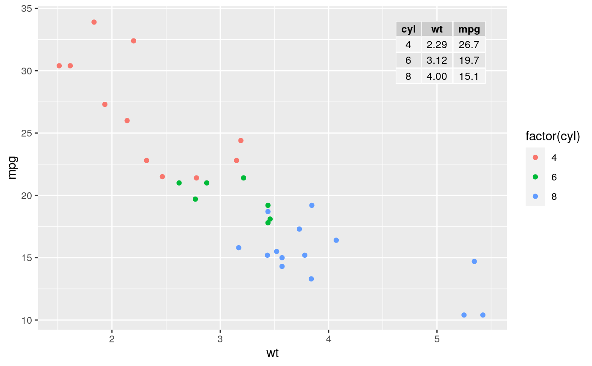
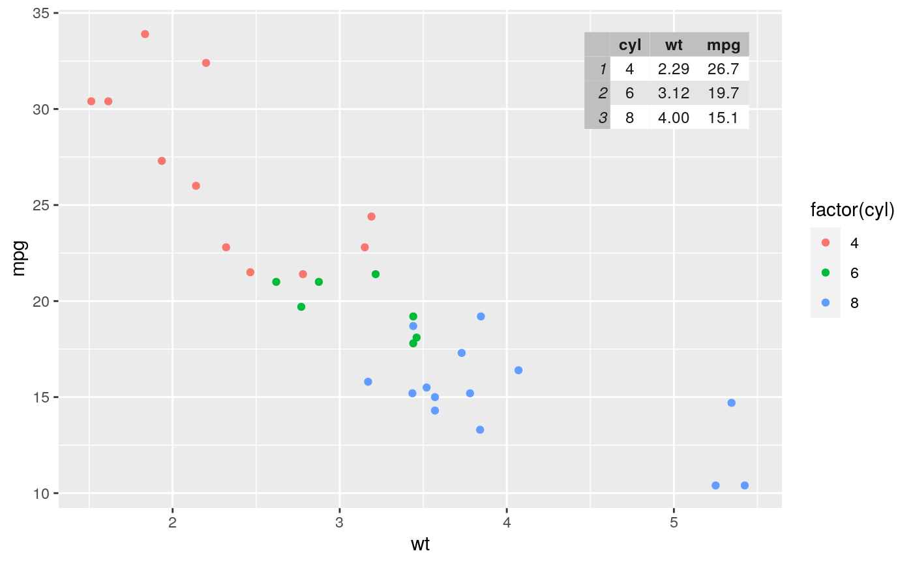
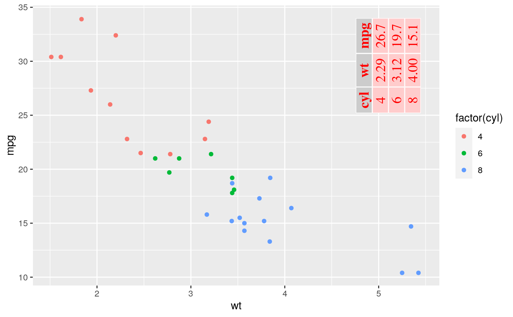
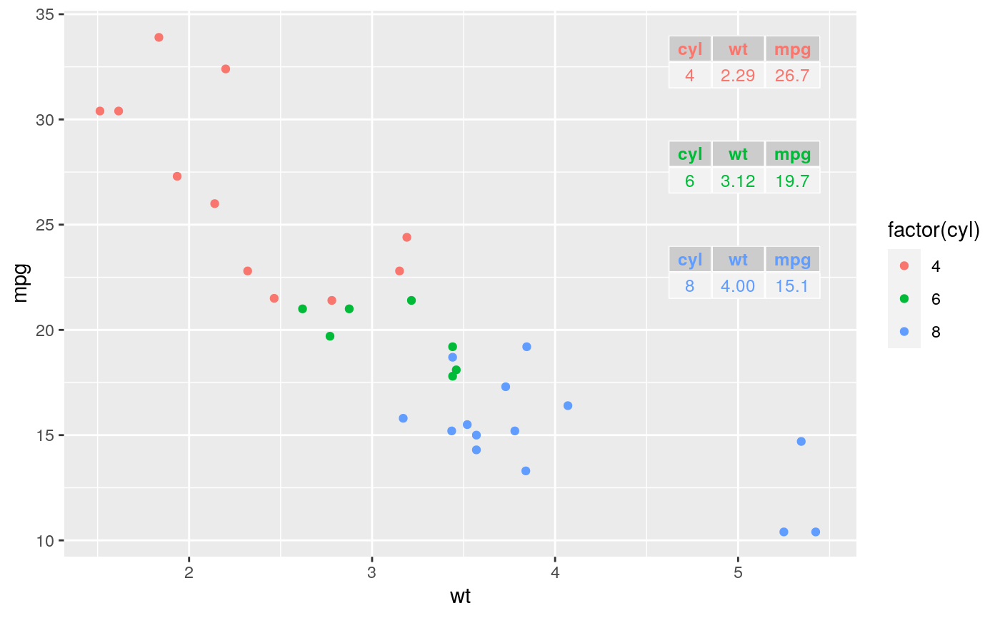

Inset tables
geom_table.Rdgeom_table adds a textual table directly to the ggplot using syntax
similar to that of geom_label while
geom_table_npc is similar to geom_label_npc in that x
and y coordinates are given in npc units. In most respects they
behave as any other ggplot geometry: a layer con contain multiple tables
and faceting works as usual.
geom_table( mapping = NULL, data = NULL, stat = "identity", position = "identity", ..., table_theme = NULL, table_rownames = FALSE, table_colnames = TRUE, table_hjust = 0.5, parse = FALSE, na_rm = FALSE, show_legend = FALSE, inherit_aes = FALSE ) geom_table_npc( mapping = NULL, data = NULL, stat = "identity", position = "identity", ..., table_theme = NULL, table_rownames = FALSE, table_colnames = TRUE, table_hjust = 0.5, parse = FALSE, na_rm = FALSE, show_legend = FALSE, inherit_aes = FALSE )
Arguments
| mapping | The aesthetic mapping, usually constructed with
|
|---|---|
| data | A layer specific data set - only needed if you want to override the plot defaults. |
| stat | The statistical transformation to use on the data for this layer, as a string. |
| position | Position adjustment, either as a string, or the result of a |
| ... | other arguments passed on to |
| table_theme | NULL, list or function A gridExtra ttheme definition, or a constructor for a ttheme or NULL for default. |
| table_rownames, table_colnames | logical flag to enable or disable printing of row names and column names. |
| table_hjust | numeric Horizontal justification for the core and column headings of the table. |
| parse | If TRUE, the labels will be parsed into expressions and
displayed as described in |
| na_rm | If |
| show_legend | logical. Should this layer be included in the legends?
|
| inherit_aes | If |
Details
These geoms work only with tibbles as data, as they expects a
list of data frames or tibbles ("tb" objects) to be mapped to the
label aesthetic. Aesthetics mappings in the inset plot are
independent of those in the base plot.
In the case of geom_table(), x and y aesthetics
determine the position of the whole inset table, similarly to that of a
text label, justification is interpreted as indicating the position of the
table with respect to the $x$ and $y$ coordinates in the data, and
angle is used to rotate the table as a whole.
In the case of geom_table_npc(), npcx and npcy
aesthetics determine the position of the whole inset table, similarly to
that of a text label, justification is interpreted as indicating the
position of the table with respect to the $x$ and $y$ coordinates in "npc"
units, and angle is used to rotate the table as a whole.
The "width" and "height" of an inset as for a text element are 0, so stacking and dodging inset tables will not work by default, and axis limits are not automatically expanded to include all inset tables. Obviously, insets do have height and width, but they are physical units, not data units. The amount of space they occupy on the main plot is not constant in data units of the base plot: when you modify scale limits, inset plots stay the same size relative to the physical size of the base plot.
If the argument passed to table_theme is a constructor function
(passing its name without parenthesis), the values mapped to size,
colour, fill, alpha, and family aesthetics will
the passed to this theme constructor for each individual table. In
contrast, if a ready constructed ttheme as a list object is passed as
argument (e.g., by calling the constructor, using constructor name followed
by parenthesis), it will be used as is, i.e., mappings to aesthetics such
as colour are ignored if present.
By default the constructor ttheme_gtdefault is used and
colour and fill, are mapped to NA. Mapping these
aesthetics to NA triggers the use of the default base_colour of the
ttheme.
As the table is built with function gridExtra::gtable(), for
formatting details, please, consult tableGrob.
Note
As all geometries, geom_table() and geom_table_npc() add
a layer to a plot, and behave as expected in the grammar of graphics. In general
ggplot themes do not affect how layers are rendered, and this is also the
case for geom_table(). As described abovem, the formatting of the
inset table is done according to the the argument passed to parameter
table_theme.
Alignment
You can modify table alignment with the vjust and
hjust aesthetics. These can either be a number between 0
(right/bottom) and 1 (top/left) or a character ("left", "middle", "right",
"bottom", "center", "top").
Inset size
You can modify inset table size with the size
aesthetics, which determines the size of text within the table.
References
This geometry is inspired on answers to two questions in Stackoverflow. In contrast to these earlier examples, the current geom obeys the grammar of graphics, and attempts to be consistent with the behavior of 'ggplot2' geometries. https://stackoverflow.com/questions/12318120/adding-table-within-the-plotting-region-of-a-ggplot-in-r https://stackoverflow.com/questions/25554548/adding-sub-tables-on-each-panel-of-a-facet-ggplot-in-r?
See also
function tableGrob as it is used to
construct the table.
Examples
library(dplyr)#> #>#> #> #>#> #> #>library(tibble) mtcars %>% group_by(cyl) %>% summarize(wt = mean(wt), mpg = mean(mpg)) %>% ungroup() %>% mutate(wt = sprintf("%.2f", wt), mpg = sprintf("%.1f", mpg)) -> tb#>df <- tibble(x = 5.45, y = 34, tb = list(tb)) # using defaults ggplot(mtcars, aes(wt, mpg, colour = factor(cyl))) + geom_point() + geom_table(data = df, aes(x = x, y = y, label = tb))ggplot(mtcars, aes(wt, mpg, colour = factor(cyl))) + geom_point() + geom_table(data = df, aes(x = x, y = y, label = tb), table_rownames = TRUE, table_theme = ttheme_gtstripes)# settings aesthetics to constants ggplot(mtcars, aes(wt, mpg, colour = factor(cyl))) + geom_point() + geom_table(data = df, aes(x = x, y = y, label = tb), color = "red", fill = "#FFCCCC", family = "serif", size = 5, angle = 90, vjust = 0)# passing a theme constructor as argument ggplot(mtcars, aes(wt, mpg, colour = factor(cyl))) + geom_point() + geom_table(data = df, aes(x = x, y = y, label = tb), table_theme = ttheme_gtminimal) + theme_classic()df2 <- tibble(x = 5.45, y = c(34, 29, 24), cyl = c(4, 6, 8), tb = list(tb[1, 1:3], tb[2, 1:3], tb[3, 1:3])) # mapped aesthetics ggplot(data = mtcars, mapping = aes(wt, mpg, color = factor(cyl))) + geom_point() + geom_table(data = df2, inherit_aes = TRUE, mapping = aes(x = x, y = y, label = tb))# Using native plot coordinates instead of data coordinates dfnpc <- tibble(x = 0.95, y = 0.95, tb = list(tb)) ggplot(mtcars, aes(wt, mpg, colour = factor(cyl))) + geom_point() + geom_table_npc(data = dfnpc, aes(npcx = x, npcy = y, label = tb))